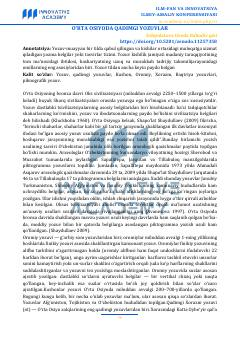

OOO'rta Osiyoda qadimgi yozuv tizimlarining kelib chiqishi va rivojlanishiga bag'ishlangan ilmiy maqola.
Ushbu maqola O'rta Osiyo hududida bronza davridan boshlab qo'llanilgan qadimgi yozuv tizimlari, jumladan piktografik, oromiy, kushon, xorazm va baqtriya yozuvlari haqida ilmiy ma'lumot beradi. Muallif arxeologik topilmalar asosida yozuvning shakllanishi va rivojlanish jarayonlarini tahlil qiladi.